Description and Reflection
This project page is an accessible version of the Accessibility Evaluation Report for Canal Square Apartments Website. In order to build this page, I tried to code HTML using Sublime Text by hand. During the accessibility evaluation on Canal Square Apartments Website, I found that WAVE can check the code of the website automatically. However, if the content is not text, it will be harder for WAVE to detect. This assignment helps me practice how to evaluate the accessibility of a website which will help me a lot in the future.
Accessibility Evaluation Report – Canal Square Apartments Website
Summary - Background - Website - Reviewer(s) - Review process - Results & Actions - References - Appendices
1. Executive Summary
This report describes the conformance of the Canal Square Apartments website with W3C's Web Content Accessibility Guidelines (WCAG). The review process is described in Section 5 below and is based on evaluation described in Accessibility Evaluation Resources.
Based on this evaluation, the Canal Square Apartments website does not meet WCAG 2.0, Conformance Level AA. Detailed review results are available in Section 6 below. Resources for follow-up study are listed in Section 7 below. Feedback on this evaluation is welcome.
2. Background about Evaluation
Conformance evaluation of web accessibility requires a combination of semi-automated evaluation tools and manual evaluation by an experienced reviewer. The evaluation results in this report are based on evaluation conducted on the following date(s): February 4th, 5th and 6th, 2018. The website may have changed since that time.
3. Website Reviewed
- Name of website: Canal Square Apartments
- Purpose of site: Attracting potential residents to choose Canal Square Apartments to live; letting current residents contact with leasing office and pay for the rental online.
- Base URL of site: https://www.canalsquareapartments.com
- URL's included in review
- All 3 pages were reviewed by semi-automated evaluation tool (WAVE http://wave.webaim.org/ ) first and then reviewed manually.
- https://www.canalsquareapartments.com/
- https://www.canalsquareapartments.com/floorplans.php
- https://www.canalsquareapartments.com/neighborhood-info.php
 Homepage |
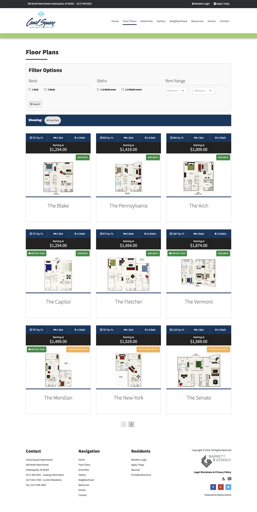 Floor Plan Page |
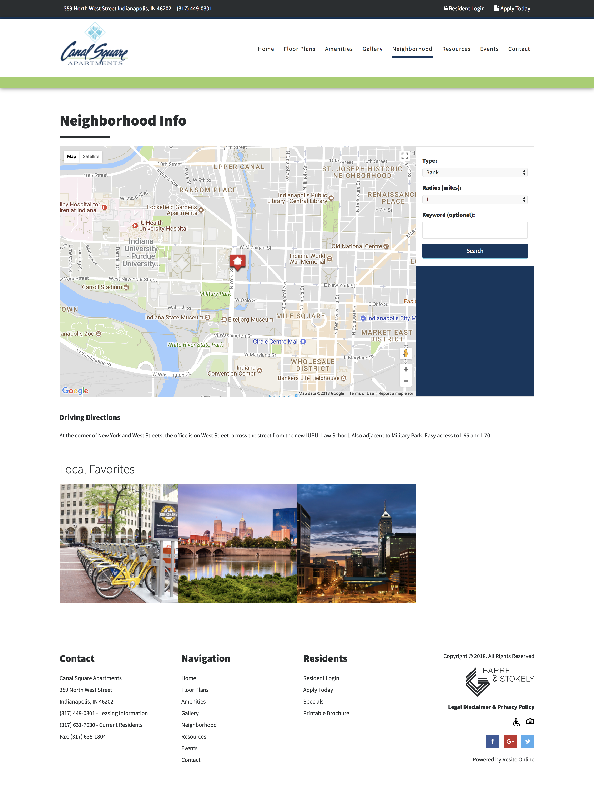 Neighborhood Info Page |
- https://www.canalsquareapartments.com/features-amenities.php
- https://www.canalsquareapartments.com/gallery.php
- https://www.canalsquareapartments.com/resources.php
- https://www.canalsquareapartments.com/events.php
4. Reviewer(s)
- Name of reviewer: Ke Zhuang
- Organization with which reviewer is affiliated: IUPUI School of Informatics and Computing
- Contact information for reviewer: kezhuang@iu.edu
- Reviewer areas of expertise: Web technologies, Validation tools for Web technologies, Web Content Accessibility Guidelines and Techniques, Approaches for evaluating Web accessibility
- Natural language(s) with which reviewer is fluent, or familiar: English, Chinese
5. Review Process
- Identify WCAG 2.0 Level for which conformance was tested (WCAG 2.0 Level A, AA, AAA): Overall, the website does not satisfy the WCAG 2.0 Level A, details are listed below:
- Result: The Homepage does not reach WCAG 2.0 Level A
- According to WAVE test result, the home page has 3 main errors:
- 1. Document language missing (3.1.1 Language of Page (Level A)) ×2
- 2. Empty link (2.4.4 Link Purpose (In Context) (Level A)) ×1
- 3. Broken ARIA reference (1.3.1 Info and Relationships (Level A)) ×4
- There are also some features where it does well:
- 1. Linked image with right alternative text ×1
- 2. There are 19 elements structured correctly.
- After going through the page manually, there are still some other problems need to be considered such as there is a link on the page that links to the current page, some heading tags are missing and redundant title text should be removed.
- Contrast: The contrast of his page passed AAA level, and by manually checking, there is no contrast problem found.
- Result: The Floor Plan page does not reach WCAG 2.0 Level A
- According to WAVE test result, the Floor Plan has 3 main errors:
- 1. Missing form label (1.1.1 Non-text Content (Level A), 1.3.1 Info and Relationships (Level A), 3.3.2 Labels or Instructions (Level A)) ×2
- 2. Empty link (2.4.4 Link Purpose (In Context) (Level A)) ×4
- 3. Document language missing (3.1.1 Language of Page (Level A)) ×1
- There are also some features where it does well:
- 1. Linked image with right alternative text ×14
- 2. Accurate form label ×4
- 3. There are 44 elements structured correctly.
- After going through the page manually, there are still some other problems need to be considered such as there are more than 20 redundant links/texts, 13 headings are unlabeled and 3 checkboxes are not enclosed in the fieldset.
- Contrast: WAVE detected several contrast errors on this page. After checking manually, the page does have some contrast problems. Those problems are from the button on the image of floor plans. A button named “limited availability” does not reach the contrast ratio. 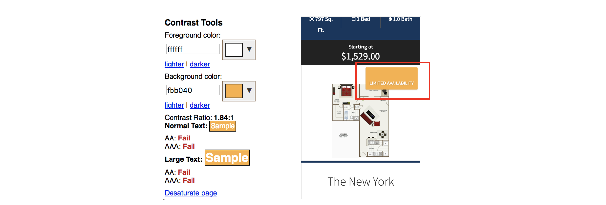
- Result: The Neighborhood Info page does not reach WCAG 2.0 Level A
- According to WAVE test result, the Neighborhood Info page has 3 main errors:
- 1. Document language missing (3.1.1 Language of Page (Level A)) ×3
- 2. Linked image missing alternative text (1.1.1 Non-text Content (Level A), 2.4.4 Link Purpose (In Context) (Level A)) × 1
- 3. Empty link (2.4.4 Link Purpose (In Context) (Level A)) ×4
- There are also some features where it does well:
- 1. Linked image with right alternative text ×1
- 2. Accurate form label ×3
- 3. There are 16 elements structured correctly.
- After going through the page manually, there are still some other problems need to be considered such as there is one heading level missing, one search button is device dependent event handler and one title text is redundant.
- Contrast: The contrast of his page passed AAA level, and by manually checking, there is no contrast problem found.
- Evaluation and validation tool used:
- WAVE by WebAIM: http://wave.webaim.org/, Released: 2014-Jan-01
- Description of manual reviews (usability testing of accessibility features) used
- After testing the website using WAVE to find some potential problems, the reviewer checked those results and record errors. For those alerts, the reviewer checked them manually and judge whether they are real problems. The reviewer went through the web page manually by checking every interactive item on the website and checked the code of the website. The reviewer also conducted Cognitive Walkthroughs to all three pages to locate where the specific problem is.
Homepage
Floor Plan page
Contrast error on Floor Plan page
Neighborhood Info page
6. Results and Recommended Actions
Interpretative summary of review results
- This website appears to not meet WCAG 2.0 A because it does not satisfy all the Level A Success Criteria.
- Accessibility features in which this site is strong include structuring most elements correctly and the form labels are accurate.
- Recommended priorities for addressing inaccessible features of site:
1. Empty link. Each page has more than one empty link which will confuse users. It’s important to solve this problem first.
2. Document language missing. This error is found on every page of the website. The website may ignore this problem when they developed it.
3. Low contrast rate. The Floor Plan page didn’t pass the contrast testing, a lot of orange and green buttons on the page did not reach the standard contrast ratio.
4. Unlabeled headings. Most pages of the website have some headings on the website were unlabeled.
5. Redundant links/texts. There are some redundant links/texts needed to be deleted.
6. Image missing alternative text. Actually, this website does quite well in adding alternative text to images, only few images are missing alternative text.
Three selected problems and recommendations
- The three selected problems are
1. Empty link. Each page has 4 or 5 empty links. Their footers contain several empty links and some contents also have this problem.
2.4.4 Link Purpose (In Context)(Level A)
https://webaim.org/standards/wcag/checklist#sc2.4.4
Understanding:
https://www.w3.org/TR/UNDERSTANDING-WCAG20/navigation-mechanisms-refs.html
How to meet (techniques):
https://www.w3.org/WAI/WCAG20/quickref/#qr-navigation-mechanisms-refs
2. Document language missing. Each page has this kind of problem.
3.1.1 Language of Page (Level A))
https://webaim.org/standards/wcag/checklist#sc3.1.1
Understanding:
https://www.w3.org/TR/UNDERSTANDING-WCAG20/meaning-doc-lang-id.html
How to meet (techniques):
https://www.w3.org/WAI/WCAG20/quickref/?showtechniques=311#qr-meaning-doc-lang-id
3. Low contrast rate. Some buttons on the page do not have enough contrast rate with those white text on them.
1.4.1 Use of Color (Level A)
https://webaim.org/standards/wcag/checklist#sc1.4.1
Understanding:
https://www.w3.org/TR/UNDERSTANDING-WCAG20/visual-audio-contrast-without-color.html
How to meet (techniques):
https://www.w3.org/WAI/WCAG20/quickref/#qr-visual-audio-contrast-without-color
- The evaluation result for 3 selected problems:
- 1. Empty link. APPENDIX 1
- 2. Document language missing. APPENDIX 2
- 3. Low contrast rate. APPENDIX 3
- Recommendations:
1. Empty link:
Add description about the purpose of the link in HTML in the text content of the element. Insert them to the footer part of all three pages (for example, one the Home Page, it is line 863) and replace the previous codes.
Codes:<a href="http://www.facebook.com/CanalSquare" class="facebook" title="Facebook" target="_blank"> <i class="fa fa-facebook "> Facebook homepage </i> </a> <a href="https://plus.google.com/+CanalSquareApartments" class="google-plus" title="Google Plus" target="_blank"> <i class="fa fa-google-plus"> Google Plus homepage </i> </a> <a href="http://www.Twitter.com/CanalSquareIndy" class="twitter" title="Twitter" target="_blank"> <i class="fa fa-twitter"> Twitter homepage </i> </a> <a href="http://www.barrettandstokely.com" target="_blank" rel="nofollow"> <svg class="barrett-stokely-logo" version="1.1" xmlns="http://www.w3.org/2000/svg" xmlns:xlink="http://www.w3.org/1999/xlink" xmlns:a="http://ns.adobe.com/AdobeSVGViewerExtensions/3.0/" x="0px" y="0px" width="165px" height="71px" viewBox="0 0 165 71" enable-background="new 0 0 165 71" xml:space="preserve"> Barrett and Stokely Legal Disclaimer and Privacy Policy </svg> </a>
2. Document language missing:
The language of the website is English. Developers should define the content of the HTML document to be in the English language by adding the following content lang="en" to each HTML document.
Codes:<html lang="en"> …… </html>
3. Low contrast rate:
This problem is existed on Floor Plan page, two button colors need to be changed.
Change the previous orange color: #fbb040 into purple: #5717ff 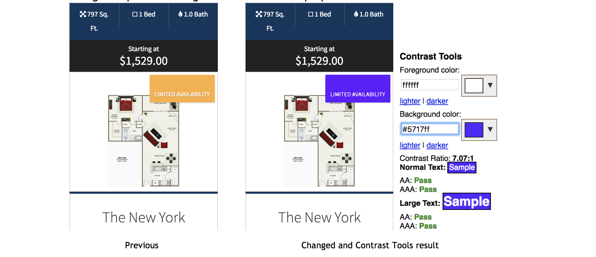
Change the previous green color: # 1f8e3f into darker green: #00671e 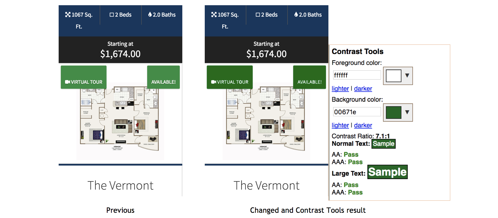
- The three selected problems are
Suggested program of on-going monitoring of website accessibility:
- There should be at least one staff from website development team to analyze the accessibility of the website.
- The Floor Plan page will be changed most fluently, it is really important to notice the contrast ratio of those buttons on this page every time the website makes updates.
7. References
- Web Content Accessibility Guidelines (WCAG) Overview
https://www.w3.org/WAI/intro/wcag - Web Content Accessibility Guidelines
2.0
https://www.w3.org/TR/WCAG20/ - Techniques for WCAG 2.0
https://www.w3.org/TR/WCAG20-TECHS/
- Accessibility Evaluation Resources
http://www.w3.org/WAI/eval/ - Web Accessibility Evaluation Tools List
https://www.w3.org/WAI/ER/tools/ - Using Combined Expertise to Evaluate Web Accessibility
https://www.w3.org/WAI/eval/reviewteams - WebAIM’s WCAG 2.0 Checklist
https://webaim.org/standards/wcag/checklist
8. Appendices
APPENDIX 1 Screenshots of Empty Links
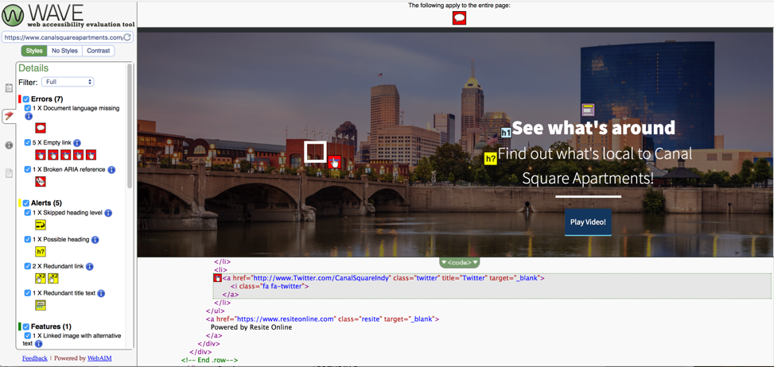
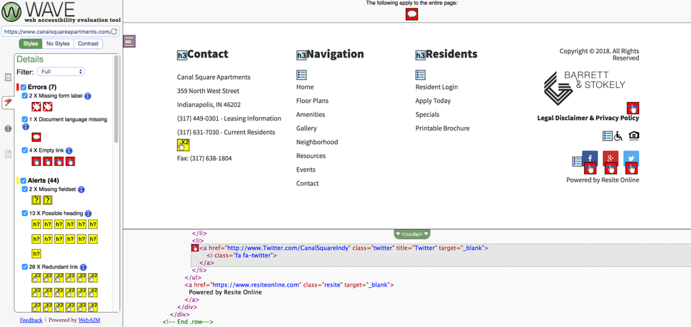
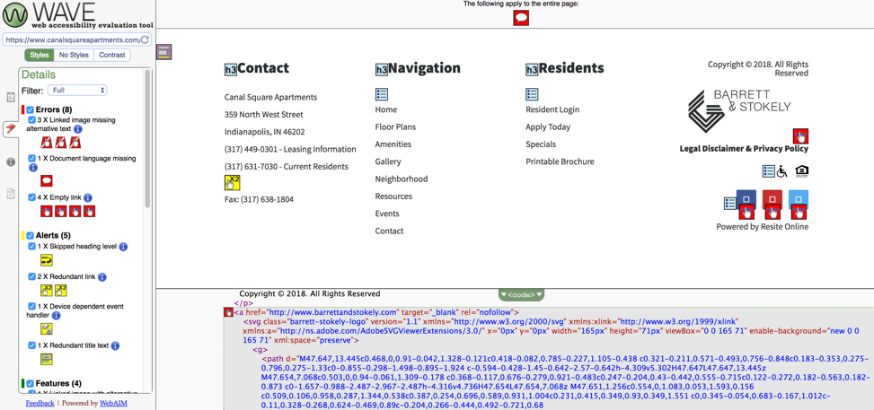
APPENDIX 2 Screenshots of Document language missing
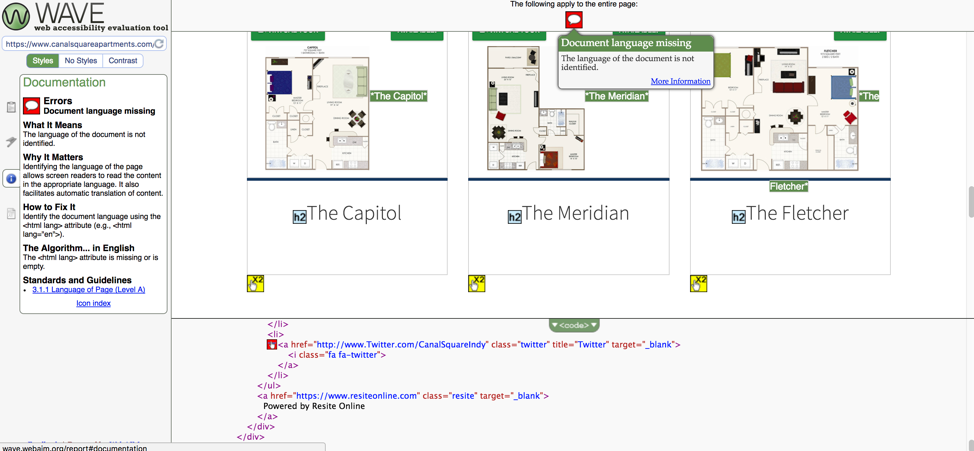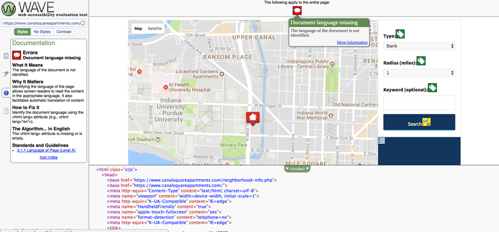
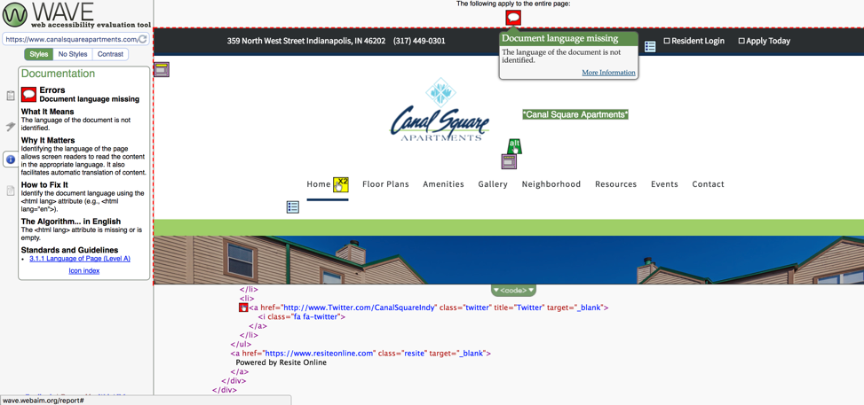
APPENDIX 3 Screenshots of Low contrast rate
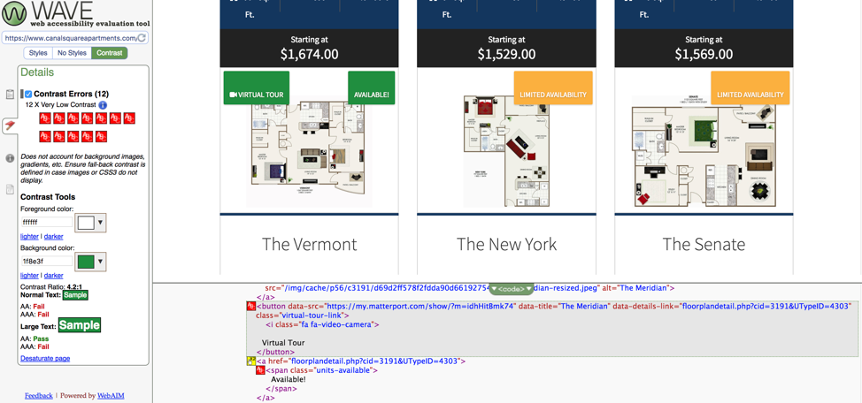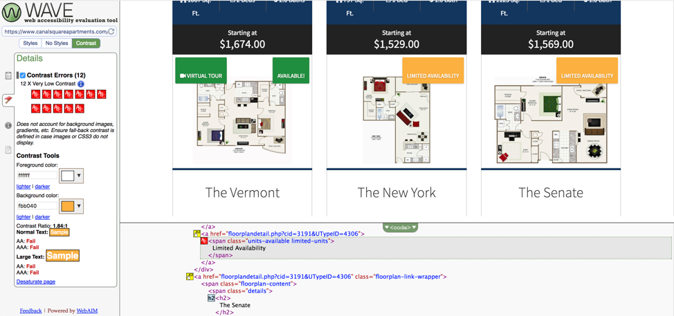
APPENDIX 4 Some Other Screenshots from WAVE Results
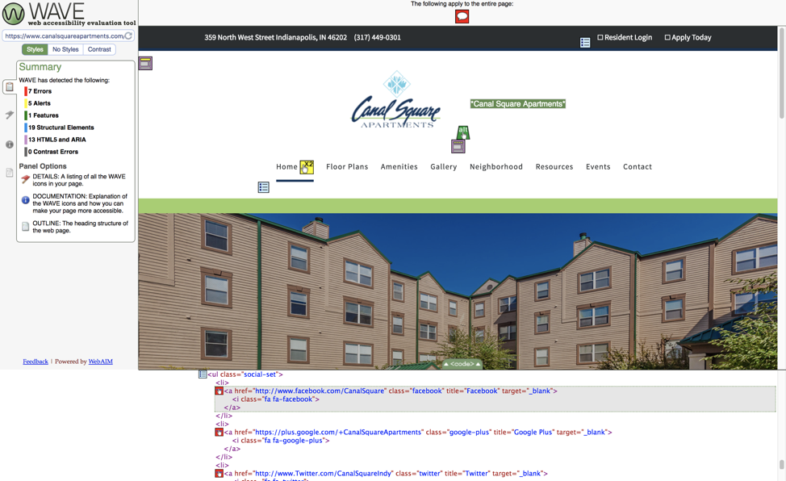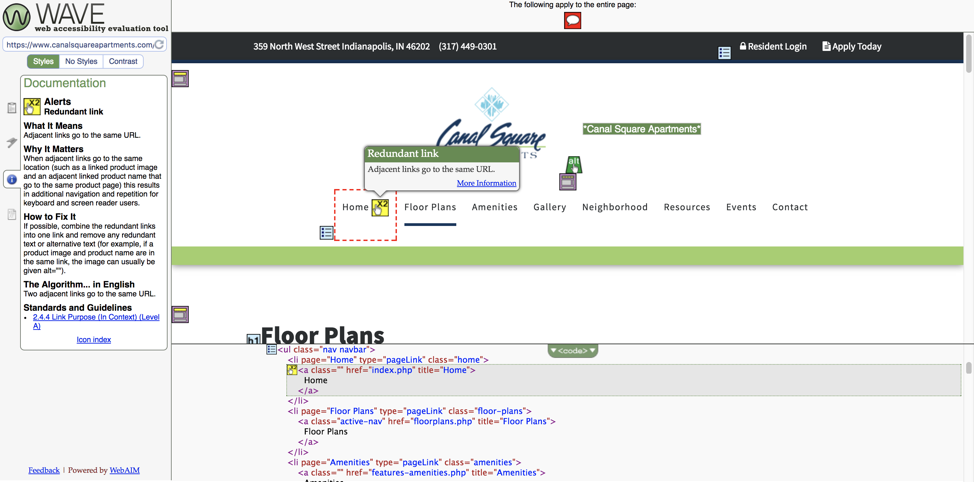
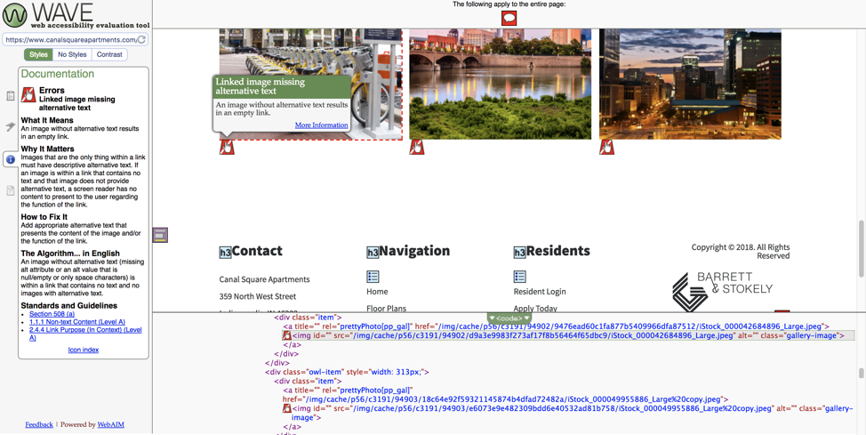